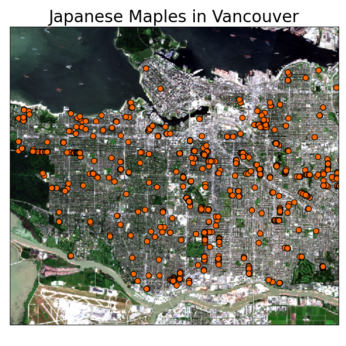
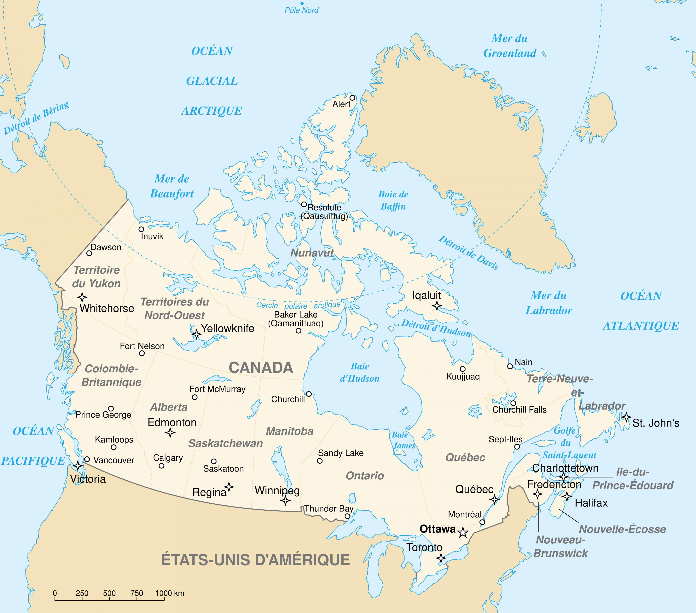
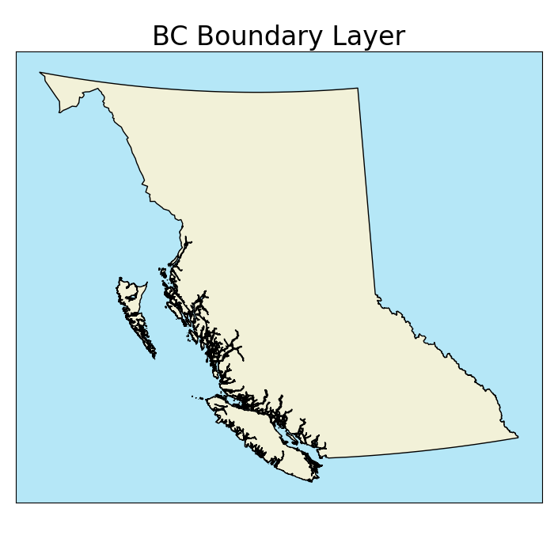

Vector Data
A more complex, but light weight format best suited for discrete objects.
Vector Data Model
Represents objects as sets of coordinate pairs.
- Linked to descriptive attributes.
- Many attributes per object.

Points
A point feature is an individual x, y coordinate pair representing a precise location.
- “Zero-dimensional”
- No length, width, or area
Points
Points are great for representing a variety of objects, depending on the scale:
- Trees
- Stop signs
- Fire hydrants

Points
Points are great for representing a variety of objects, depending on the scale:
- Trees
- Stop signs
- Fire hydrants
- Cities
- Wild fires
- Airports

Lines
A line feature is a set of connected points. Must have a start and end point. May have middle points (vertices).
- One-dimensional
- Length
- No width or area
Lines
Lines are also great, depending on the scale:
- Hiking trails
- Power lines
- Water pipes

Lines
Lines are also great, depending on the scale:
- Hiking trails
- Power lines
- Water pipes
- Roads
- Rivers
- Storm tracks

Polygons
A polygon feature consist of a set of three or more vertices connected by line segments (edges) that form an enclosed shape.
- One-dimensional
- Length & width
- Area
Polygons
Preferred for many objects depending on scale:
- Climate units
- Lakes
- Political boundaries

Polygons
Preferred for many objects depending on scale:
- Climate units
- Lakes
- Political boundaries
- Buildings
- Roads
- Cities
interior rings
All polygons are an enclosed shape. Some can also have interior rings (holes).
- Each ring is a separate set of vertices and edges within the polygon.
- Interior rings cannot overlap.

Multi-part Vectors
When an object has multiple parts, the vector model allows for:
- Multi-polygons
- Multi-lines
- Multi-points

Resolution
Data resolution also applies to the vector model:
- Less straightforward than for raster model
- Space between vertices
- Higher resolution = larger filed size

Tabular Data
Non-spatial data can be stored in an Attribute Tabule separate from the spatial data.
Tabular Data

Tabular Data
Ability to store many attributes:
- Less redundancy than raster model
- Easy to add new attributes
Key Advantages
- Compact data structure
- Smaller file sizes
- Good for discrete objects
- Graphic output is usually "cleaner"
- Easy to query and select by attributes
- Topology (connectivity) - Proximity & Network Analysis
Main Disadvantages
- Complex data structures compared to rasters
- Topology (connectivity) - can be a huge head ache when creating a layer
- Some tasks (overlay of layers) can be computationally expensive
- No variability within polygons possible.
- Less suited for continuous variables (requires significant generalization)
Shapefiles (.shp)
One of the most common file types you will encounter, stores the coordinates of vertices plus metadata:
- Object type: points/multi-points, lines/multi-lines, or polygons/multi-polygons.
- Only one type per .shp!
- Coordinate reference system (CRS).
- Attribute table.
GeoJson (.json)
A simple, lightweight format for most commonly encountered in web mapping.
- Unlike shapefiles, a GeoJSON can mix of geometries.
- Encoded stylistic choices in the file.
- Larger File Size
- An Example